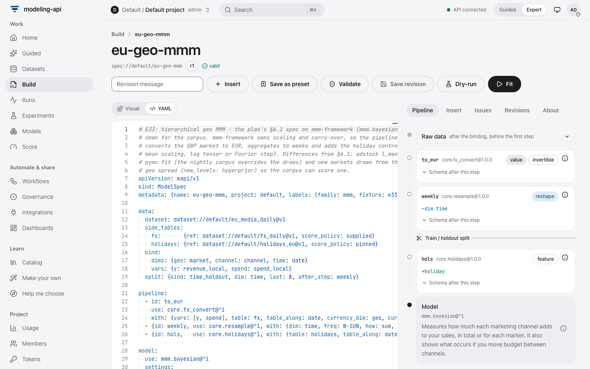
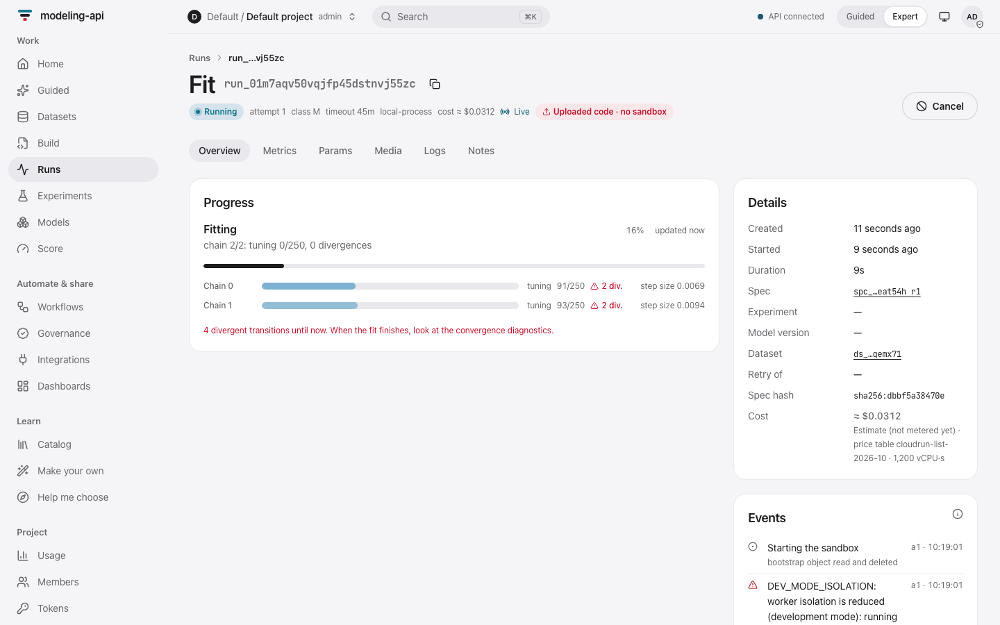
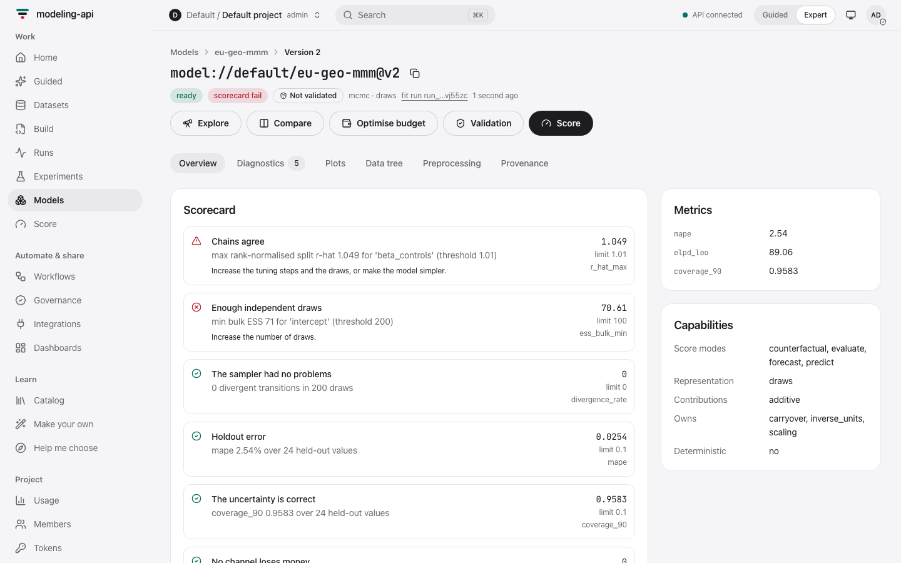
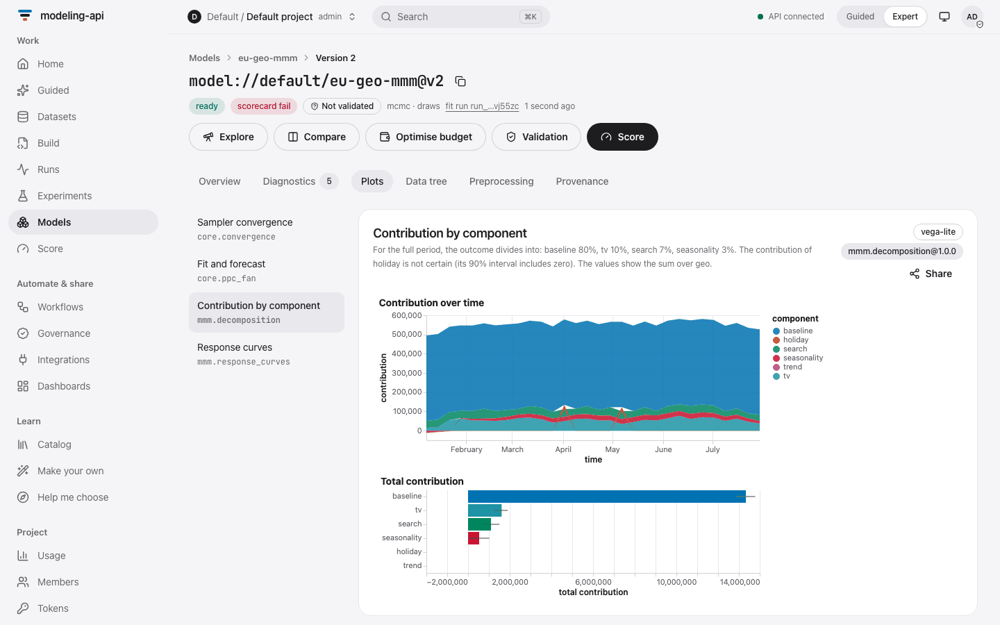
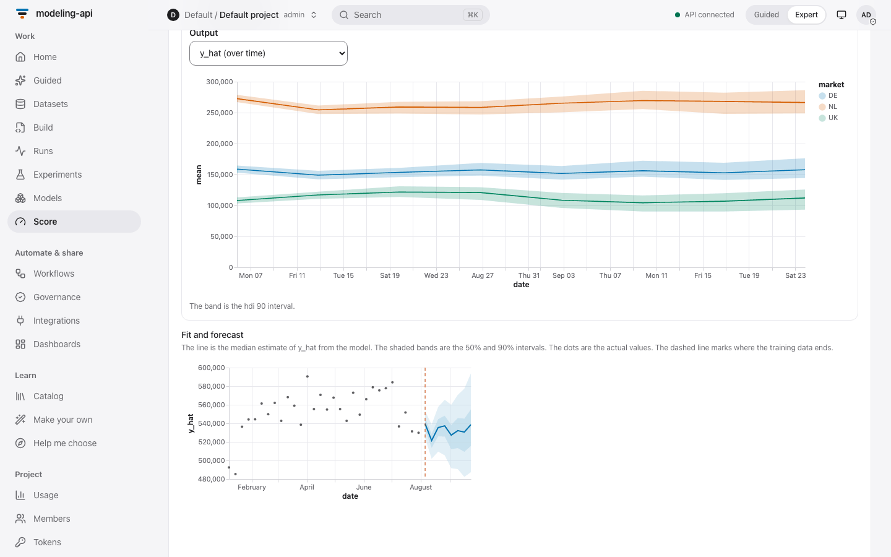

In this quickstart, you start the platform on your own machine and load a demo dataset. Then you fit a hierarchical geo marketing-mix model from the web app. You read its scorecard and plots, and you score an 8-week forecast. You do not need Docker or a cloud account. PostgreSQL is embedded, and the object storage is a local emulator of Google Cloud Storage.
| Step | What occurs | Time on a laptop |
|---|---|---|
| 1. Install | Python and JavaScript dependencies | 2–5 min the first time |
| 2. Start the stack | Database, object store, API, worker, web app, plot sandbox | about 10 s |
| 3. Load the demo | Three datasets and a model spec, through the API | about 40 s |
| 4. Fit from the browser | A sandboxed fit run that you watch live | 20–60 s |
| 5. Inspect | Scorecard, diagnostics, plots, provenance | – |
| 6. Score | An 8-week forecast. The run uses the fitted preprocessing again. | about 10 s |
We did exactly these steps on a new clone when we wrote this page. The time from make dev
to a scored forecast was less than three minutes. The screenshots below come from that run.
Before you start¶
You need these items:
- macOS or Linux, with about 2 GB of free disk space.
- uv. If necessary, it installs Python 3.12 for you.
- Node.js 22 or newer, with pnpm.
corepack enablegives the pinned pnpm version. git. If you want to follow the HTTP examples later, you also needjqandcurl.
1. Install¶
git clone <repository-url> modeling-api
cd modeling-api
make install # uv sync --all-packages, then pnpm install
make install puts all the Python packages of the workspace into .venv. It puts the
dependencies of the web app into node_modules. It installs nothing globally.
2. Start the stack¶
make dev runs all the services in the foreground. Each output line starts with the name of
its service. When the stack is ready, make dev shows all 6 services up. Do not stop
make dev. To stop all the services, push Ctrl+C.
The first start also puts a sandboxed describe run in the queue. This run exports the catalog of installed models and steps. It finishes in a few seconds.
| Service | Address |
|---|---|
| Web app | http://127.0.0.1:5173 |
| API | http://127.0.0.1:8000 (OpenAPI document at /openapi.json) |
| Plot sandbox (a separate origin, on purpose) | http://127.0.0.1:5174 |
| GCS shim (signed URLs point here) | http://127.0.0.1:4443 |
Port 8000 (or any other) already taken?
Export the applicable variable before make dev. Also export it in each other shell
that you use:
export MAPI_API_URL=http://127.0.0.1:18000
export MAPI_GCS_ENDPOINT=http://127.0.0.1:14443
export MAPI_WEB_ORIGIN=http://127.0.0.1:15173
export MAPI_PLOTS_ORIGIN=http://127.0.0.1:15174
make dev, make seed, the CLI, the Python client and the web app all read the same
variables. We made this page on exactly these ports.
Troubleshooting gives more data.
3. Load the demo¶
In a second shell, type this command:
API http://127.0.0.1:8000 is ok (version 0.16.0)
uploading eu_media_daily (17 KiB) ...
dataset://default/eu_media_daily@v1 ready
uploading fx_daily (17 KiB) ...
dataset://default/fx_daily@v1 ready
uploading holidays_eu (7 KiB) ...
dataset://default/holidays_eu@v1 ready
spec spec://default/eu-geo-mmm@r1: valid
make seed uses only the public API. For each table, it does these steps:
- It asks for a signed upload URL.
- It sends the file directly to object storage.
- It starts a sandboxed ingest run. The run opens the file and checks it against its schema. Then it stores an immutable, content-addressed version.
Then make seed saves the model spec and validates it.
The data is the E33 example of the conformance corpus. It contains these tables:
- 30 weeks of daily spend for each market and channel, for NL, DE and UK.
- Daily revenue for each market (UK in GBP).
- An FX table.
- A holiday calendar.
To score, you need the spend that you plan for the next weeks. Upload it with the CLI:
uv run python scripts/seed.py --export demo/ # the demo tables, score payloads and spec
uv run mapi datasets upload demo/eu_media_future.zarr.zip --name eu_media_future
4. Fit from the browser¶
- Open http://127.0.0.1:5173.
- Go to Build.
- Click the
eu-geo-mmmrow.

When the editor opened, it validated the spec on the server. All dataset:// references,
all steps and the model settings resolve. The panel on the right shows what each step of the
pipeline does to the data. The split into training and holdout weeks is after the weekly
step. The reason is that a week exists only from that stage on.
Push Fit. The run page follows the run through server-sent events:

- Starting the sandbox: the supervisor of the run read its one-time bootstrap object. It deleted the object before model code started.
DEV_MODE_ISOLATIONis usual on a laptop. The local executor cannot run the model code as a separate user. Containers and the cloud executor can.- The progress bar and the message come directly from the sampler.
- The run page shows one lane for each chain, with its draws and divergences. The tabs Metrics, Params, Logs and Notes show what the run logged (Track metrics, params and tags).
The spec uses very small sampler settings, so the fit takes much less than a minute. On a new machine, the first fit also compiles PyTensor code. When the fit succeeds, the platform does these steps:
- It checks each file that the run wrote against the checksums of the storage.
- It copies the files to a location that runs cannot get to.
- It signs a manifest.
Push Inspect model://default/eu-geo-mmm@v1.
5. Inspect the model¶

The scorecard flags R-hat and effective sample size. Two chains of 100 draws are not
sufficient to converge. Each warning tells you what to do. The metrics come from the 8
holdout weeks. The model scored these weeks through the same code path as a forecast. This
occurred before the model was fitted again on all the data (fit.mode: evaluate_then_refit).
Open Plots → Contribution by component:

Each plot is a Vega-Lite or Plotly spec that the server sanitized. The plot shows inside an
<iframe sandbox="allow-scripts"> that comes from the own origin of the plot sandbox.
Provenance shows the signed manifest, each stored object with its generation, and the
lineage.
6. Score a forecast¶
Push Score (top right). What this model needs lists the inputs that the model reads and the data that it was fitted on. The form shows only the modes that this model supports.
- Keep Forecast and 8 periods.
- Under Values to score, select Use a dataset.
- Type
dataset://default/eu_media_future@v1. Alternatively, keep Type values and type the planned spend into the grid. Then you do not need an upload. - Under Advanced, keep the
fxside table at the version that the fit used. It covers the forecast weeks. - Push Forecast.

The run did not fit the model again. It used the fitted preprocessing again: currency
conversion, weekly resampling, scaling, and the last weeks of spend that each market carries
into the adstock. Then it inverted the result back to weekly EUR. The output_space of the
result tells you this.
Stop, and start again later¶
make stop # or Ctrl-C in the make dev shell
make dev # everything you loaded is still there (.local/)
make clean-local # delete the local database and objects, start from scratch
Where next¶
-
Tour every page of the web app
Datasets and CSV mapping, revisions and dry-runs, run controls, the data tree and counterfactuals.
-
Do the same from the command line
mapi datasets upload,mapi fit --remote @,mapi scoreand--jsonfor scripts. -
mapi_client.Client: uploads, live events, model versions andxr.DataTreeresults. -
Fit the spec again with other settings. Then compare the runs side by side and group them in an experiment.
-
The control plane, the run sandbox, storage integrity and the event path.